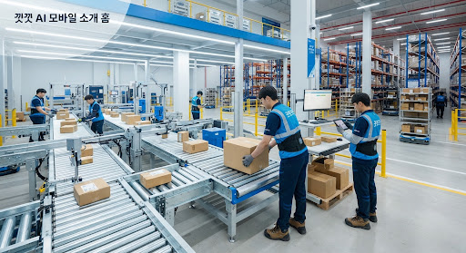

바른 자세가 만드는 건강한 생산성,
꼿꼿 AI
아무것도 착용하지 않아도, 천장 카메라와 Edge AI가 물류 현장 근로자의 허리 구부림·목 숙임·어깨 웅크림을 감지해 경광등과 부저로 즉시 알려 줍니다.
바른 자세 유지 중 • 경광등 소등 대기
물류 현장의 무너진 자세,
꼿꼿 AI가 푸는 문제
분류·피킹·상하차 작업에서 허리를 반복해서 구부리거나, 목을 숙인 채 장시간 서 있거나, 어깨를 웅크린 자세가 누적되면 허리·목·어깨의 근골격계 부담이 커집니다.
기존 방식의 한계
- •안전 교육·스트레칭 방송은 작업 중 자세를 실시간으로 교정하지 못합니다.
- •관리자 순회 점검은 시간이 많이 들고 모든 근로자를 상시 관찰할 수 없습니다.
- •근로자는 작업에 집중하느라 자기 자세가 나빠졌는지 알아차리기 어렵습니다.
- •웨어러블 센서는 착용 거부감과 배터리 관리 부담이 큽니다.
꼿꼿 AI의 핵심 가치
- •근로자: 아무것도 착용하지 않아도 작업 중 자세 이탈을 즉시 알려 줍니다.
- •관리자: 구역·시간대별 익명 통계로 작업대 높이, 동선 등 환경 개선의 근거를 줍니다.
- •왜 AI인가: 규칙 기반 영상 처리는 작업복·안전조끼·박스 가림·다중 인원 환경에서 관절을 안정적으로 찾지 못합니다. 딥러닝 자세 추정은 다양한 체형과 조명에서 관절 좌표를 추정해, 사람이 일일이 보지 않아도 같은 기준으로 판단합니다.
설치부터 교정까지 6단계
페르소나(가정): 분류 작업대에서 하루 8시간 서서 일하는 40대 근로자 김 씨
- 1제품 설치
높이 약 3m, 하향 30°, 작업자 측면 45°에 PoE 카메라와 Edge 디바이스를 고정하고 경광등·부저 제어함을 설치합니다. 대시보드에서 구역 ROI를 지정합니다.
- 2데이터 수집
15fps 영상을 Edge로 전달합니다. 교대 시작 시 10초간 바른 자세를 측정해 기준값을 잡고, 얼굴 인식 없이 교대 단위 임시 ID로만 관리한 뒤 교대 종료 시 폐기합니다.
- 3AI 분석
사람을 검출해 17개 관절 키포인트를 추정하고, 허리 굽힘각·목 숙임각·어깨 높이차를 계산합니다. 원본 프레임은 메모리에서만 처리하고 즉시 폐기합니다.
- 4판단 결과 생성
임계값 초과 상태가 지속되면 유형별로 판정합니다. 순간적인 물건 집기는 제외하고, 휴식·이동 구간은 자동으로 일시정지합니다.
- 5장치 제어
Edge가 MQTT로 구역 ESP32 제어기에 신호를 보내 경광등과 부저를 켭니다. 알림은 교대당 최대 8회, 재알림은 최소 5분 간격입니다.
- 6후속 행동
근로자가 자세를 바로잡으면 경광등이 꺼지고 "교정 성공"이 기록됩니다. 안전관리자는 익명 통계로 반복 발생 구역의 작업대 높이·동선을 개선합니다.
자세 판정 기준 (초기값, 가정)
| 유형 | 판정 지표 | 임계값 | 지속시간 |
|---|---|---|---|
| 허리 구부림 | 어깨-골반-무릎 기준 몸통 굽힘각 | 30° 초과 | 10초 이상 |
| 목 숙임 | 귀-어깨 기준 목 전방 숙임각 | 30° 초과 | 15초 이상 |
| 어깨 웅크림 | 좌우 어깨 높이차 / 어깨-귀 거리 감소율 | 기준값 대비 20% 이상 | 20초 이상 |
임계값은 REBA, ISO 11226 등 인간공학 평가 기준을 참고하되 산업보건 전문가 검토 후 확정합니다. 2D 영상은 카메라 각도에 따라 굽힘각 오차가 커지므로 측면 45° 설치를 권장합니다.
성공 지표
영상이 현장 밖으로 나가지 않는 구성
1080p PoE IP 카메라(광각 약 100°, RTSP), 구역당 조도 센서 1개
NVIDIA Jetson Orin Nano 8GB (JetPack, TensorRT), 온디바이스 처리
YOLOv8-Pose(n/s) + ByteTrack 주력, MediaPipe Pose 비교군 → PoC에서 확정
Python · NumPy · OpenCV, 타이머 기반 상태머신 (2단계에서 1D-CNN 검토)
ESP32-S3 경광등·부저 릴레이, MQTT(Mosquitto), 사내 유선 LAN
온프레미스 Ubuntu + Docker, PostgreSQL + TimescaleDB, Streamlit (이후 Grafana 검토)
개발 범위
- • 실시간 키포인트 추정 (다중 인원, 임시 ID 추적)
- • 자세 각도 계산과 3유형 분류, 지속시간 판정·휴식/이동 일시정지
- • 경광등·부저 제어 (ESP32, MQTT)와 교정 확인
- • 이벤트 로그 (키포인트·집계값만 저장)
- • 관리자 대시보드, 구역 ROI·기준 자세 측정
- • 장치 헬스체크, 현장 데이터 수집·라벨링·성능 검증
개발 비범위
- • 얼굴 인식·개인 신원 식별, 음성 인식
- • 영상 저장 및 외부 전송
- • 의학적 진단·치료 판단
- • 인사평가·징계 목적의 데이터 활용
- • 모바일 앱, 다국어, 세분화된 권한, MLOps 자동화
- • 웨어러블·진동 알림, 중량물 인양 분석 (MVP 이후)
ROI 분석: 조건부 진행 (Conditional Go)
전제(가정): 물류센터 1개소, 작업 구역 12곳, 근로자 120명, 근골격계 관련 연간 비용 1인당 200만 원, 도입 후 30% 감소
효과 달성률 80%면 회수 26.1개월, 60%면 50.0개월이며 손익분기 달성률은 약 38%입니다. 그래서 전면 도입 전 1개 구역 PoC(8주)에서 오탐률 10% 이하, 교정률 60% 이상을 먼저 검증합니다. 절감액의 55%가 산재·결근 비용 감소에 기대므로, 실제 사업장 데이터로 가정을 교체하는 것이 가장 중요합니다.
꼿꼿 AI는 자세 인식 개선 보조 도구이며 질환 예방·치료·진단을 표방하지 않습니다. 영상과 얼굴 데이터는 저장하지 않고, 관리자에게는 익명 집계만 제공합니다.
물류센터와 공장,
왜 꼿꼿 AI인가?
분류·피킹·상하차처럼 반복 작업을 하는 근로자에게 자세 이탈을 바로 알려, 흐트러진 자세가 쌓이는 시간을 줄입니다. 아래 수치는 PRD의 도입 목표입니다.
구역당 일일 누적 시간을 도입 전 2주 평균 대비 도입 4주 후 30% 줄이는 것이 목표입니다. 주간 집계로 확인합니다.
알림 로그와 교정 이벤트 로그로 측정합니다. 알림 피로를 막기 위해 1인당 교대당 알림은 8회 이하로 제한합니다.
영상은 Edge에서만 처리하고 즉시 폐기하며, 관리자에게는 구역·시간대별 익명 집계만 제공합니다. 저장소 감사 로그로 정기 점검합니다.
비접촉에서 즉각 교정까지,
완결형 AI 솔루션
17개 관절 키포인트 추정
착용 장비 없이 천장 PoE 카메라 영상을 Edge 디바이스(Jetson)가 15fps로 받아 사람을 검출하고, YOLOv8-Pose와 ByteTrack으로 다중 인원의 관절을 임시 ID로 추적합니다.
각도·지속시간 판정
허리 굽힘각·목 숙임각·어깨 높이차를 계산하고, 임계값 초과가 10~20초 이어지면 허리 구부림·목 숙임·어깨 웅크림으로 분류합니다. 순간적인 물건 집기와 휴식·이동 구간은 제외합니다.
경광등·부저 알림
Edge가 MQTT로 구역 ESP32 제어기에 신호를 보내 2초 이내에 경광등을 켜고 부저를 울립니다. 소음이 큰 현장이라 소리와 빛을 함께 쓰며, 바른 자세로 돌아오면 소등되고 교정 성공이 기록됩니다.
흔들림 없는 판정을 만드는
4단계 데이터 전처리
현장 조사 결과를 근거로 영상 → 키포인트 → 시계열 → 학습 데이터 순서의 전처리 파이프라인을 설계했습니다. 조명·가림·떨림·개인차를 단계별로 걸러내 오알림 없이 정확하게 감지합니다.
영상 단계
- A1 프레임 샘플링30fps 입력 → 10~15fps 추론
- A2 렌즈 왜곡 보정광각일 때 · 체커보드 15~20장 캘리브레이션
- A3 영상 안정화이동형 거치 시 · ORB 500개, 반경 15프레임
- A4 조명 보정감마 0.6~0.8 · CLAHE clip 2.0, 8×8
- A5 대상자 검출 · ID 고정 · ROI신뢰도 0.5↑, IoU 0.3, 여백 15~20%
- A6 얼굴 비식별화반드시 포즈 추정 이후 적용
키포인트 단계
포즈 추정 모델 → 키포인트 (x, y, confidence)
- B1 신뢰도 필터링0.3 미만 결측 처리 (MediaPipe 0.5)
- B2 상시 가림 관절 마스킹책상 착석 시 무릎·발목 제외
- B3 짧은 결측 보간실시간 0.5초 마지막 값 유지 · 오프라인 선형 보간 · 초과 시 판정 보류
- B4 위치·스케일 정규화원점 어깨 중점 · 어깨 너비 / 귀-어깨 거리 · 스케일은 바른 자세일 때만 갱신
시계열 단계
- C1 One Euro Filter 평활화min_cutoff 1.0, beta 0.007, d_cutoff 1.0 · B4 정규화보다 먼저 적용
- C2 자세 특징 계산목 각도, 어깨 기울기 등 · 좌우 기울기는 두 점이 충분히 떨어질 때만
- C3 개인 기준선 · 드리프트 재보정시작 시 바른 자세 10초 중앙값 · EMA α 0.001
- C4 슬라이딩 윈도우 · 히스테리시스윈도우 3초/스트라이드 1초 · 70% 진입, 30% 해제
학습 데이터 단계
- D1 라벨 정제전환 경계 ±0.5초 제외 · 라벨러 2인, kappa 0.7
- D2 사용자 단위 분할LOSO / GroupKFold
- D3 데이터 증강회전 ±10°, 스케일 0.9~1.1, 지터 0.01, 드롭아웃 10% · 회전·스케일·반전은 세션 단위
- D4 클래스 불균형 처리역빈도 가중치 또는 Focal Loss (γ 2)
- 비식별화는 추정 후 — 얼굴을 먼저 가리면 머리·목 키포인트 정확도가 떨어집니다.
- 분할은 증강 전 — 같은 사람의 증강본이 학습·검증에 섞이는 데이터 누수를 막습니다.
- 좌우 반전 시 라벨도 반전 — 좌/우 관절 인덱스와 방향 라벨을 함께 교환합니다.
- C1 평활화를 B4 정규화보다 앞에 — 권장 beta 0.007은 픽셀 좌표 기준 값입니다. 각도 특징은 순서와 무관하게 같습니다.
- 실시간 결측은 마지막 값 유지(0.5초) — 선형 보간은 미래 프레임이 필요해 지연이 생깁니다. 오프라인 학습 데이터에는 선형 보간을 씁니다.
- 기준선은 평균 대신 중앙값 — 캘리브레이션 중 잠깐 움직여도 기준선이 흔들리지 않습니다.
- 정규화 스케일은 바른 자세일 때만 갱신 — 거북목 변화가 정규화로 지워지지 않게 합니다.
- 좌우 기울기는 두 점이 충분히 떨어질 때만 — 측면 설치에서 겹친 어깨·귀의 노이즈 값을 자동 제외합니다 (
FEATURE_VALIDITY). - 증강은 세션 단위로 동일 적용 — 캘리브레이션 구간도 함께 돌아가 기준선 대비 변화량이 보존됩니다.
- 판정 규칙(
RULES)은 임시 기준 — 7-1 라벨 기준이 확정되면 임계값을 조정하거나 학습 모델(PosturePipeline(classifier=...))로 교체합니다.
단계별 적용 조건 · 초기 파라미터
현장 조사 반영 전 일반 조건 기준입니다. 근거 표시는 해당 기법이 필요한 현장 조사 항목 번호입니다.
A영상 단계9개 항목
expand_more
적용 · 항상
초기값 · 추론 10~15fps (30fps 입력이면 2~3프레임마다 1회 추론)
적용 · 광각·어안 렌즈일 때
초기값 · 체커보드 캘리브레이션 15~20장, 보정 맵 사전 계산
저사양 대안 · 영상 대신 키포인트 좌표에만 보정 적용
적용 · 이동형 거치 또는 진동이 있을 때
초기값 · 배경 특징점(ORB) 500개 기반 어파인 보정, 이동평균 반경 15프레임
적용 · 저조도·역광
초기값 · 평균 밝기 80 미만일 때 감마 0.6~0.8
적용 · 저조도·조명 변화
초기값 · LAB의 L 채널에만 적용, clipLimit 2.0, tileGrid 8×8
적용 · 타인·반사·포스터 등 오검출 요인이 있을 때
초기값 · 검출 신뢰도 0.5 이상, 최소 박스 면적 = 화면의 5% 이상
적용 · 타인이 등장할 때
초기값 · 이전 박스와 IoU 0.3 이상인 사람 유지, 5초간 미검출 시 재선택
적용 · 항상
초기값 · 검출 박스 기준 상하좌우 15~20% 여백 확장
적용 · 비식별화가 필요할 때
초기값 · 반드시 포즈 추정 '후'에 적용
B키포인트 단계4개 항목
expand_more
적용 · 헐렁한 옷·가림이 있을 때
초기값 · 신뢰도 0.3 미만이면 결측 처리 (MediaPipe visibility는 0.5)
적용 · 책상 등으로 항상 가려지는 관절이 있을 때
초기값 · 책상 착석 시 무릎·발목 등 하체 관절을 입력에서 제외
적용 · 짧은 가림이 있을 때
초기값 · 실시간은 연속 결측 0.5초까지 마지막 값 유지, 오프라인(학습 데이터)은 선형 보간 · 초과 시 해당 구간 판정 보류
변경 · 선형 보간은 미래 프레임이 필요해 지연이 생기므로 실시간에서는 쓰지 않습니다
적용 · 항상
초기값 · 원점 = 어깨 중점 / 스케일 = 어깨 너비(정면 설치) 또는 귀-어깨 거리(측면 설치)
변경 · 스케일은 '바른 자세' 상태일 때만 갱신 — 거북목에서는 귀–어깨 거리 자체가 변해, 계속 갱신하면 그 변화가 정규화로 지워집니다
C시계열 단계5개 항목
expand_more
적용 · 떨림·타이핑 진동이 있을 때
초기값 · min_cutoff 1.0, beta 0.007, d_cutoff 1.0
조정 · 떨림이 심하면 min_cutoff 0.5 / 1초 이내 반응 필요 시 beta 0.02~0.05
변경 · B4 정규화보다 먼저 적용 — beta 0.007은 픽셀 좌표 기준 값이라 정규화 좌표(1 내외)에서는 필터가 거의 반응하지 않습니다
적용 · 사용자별 기준을 쓸 때
초기값 · 시작 시 바른 자세 10초 중앙값을 기준선으로 등록
변경 · 평균 대신 중앙값 — 캘리브레이션 중 잠깐 움직여도 기준선이 흔들리지 않습니다
적용 · 장시간 사용할 때
초기값 · '바른 자세' 판정 구간에서만 기준선 EMA 갱신, α 0.001
적용 · 항상
초기값 · 윈도우 3초, 스트라이드 1초
적용 · 오알림 방지
초기값 · 윈도우의 70% 이상 불량이면 불량 진입, 30% 이하면 해제
알림 · 불량 상태가 6-3에서 정한 시간 이상 지속되면 알림
D학습 데이터 단계6개 항목
expand_more
적용 · 구간 단위로 라벨링할 때
초기값 · 자세 전환 경계 앞뒤 0.5초 구간은 학습에서 제외
적용 · 라벨 노이즈가 우려될 때
초기값 · 라벨러 2인 이상, Cohen's kappa 0.7 미만 구간은 재검토
적용 · 항상 (특히 인원이 적을 때)
초기값 · 사용자 단위 분할 (Leave-One-Subject-Out 또는 GroupKFold)
주의 · 반드시 증강 '전'에 분할
적용 · 데이터가 부족할 때
초기값 · 회전 ±10°, 스케일 0.9~1.1, 좌표 지터 0.01, 관절 드롭아웃 10%
주의 · 좌우 반전 시 좌/우 관절 인덱스 교환 + 방향 라벨도 함께 반전
변경 · 회전·스케일·반전은 세션 전체에 같은 값 적용 — 회전 10°가 목 각도 임계값(10°)과 같아 프레임마다 바꾸면 라벨 의미가 깨집니다
적용 · 영상 입력 모델 학습 시 (원본 영상 저장이 가능할 때만)
초기값 · 밝기 ±30%, 대비 ±20%
적용 · 바른 자세 데이터가 대부분일 때
초기값 · 클래스 가중치 = 빈도의 역수, 또는 Focal Loss (γ 2)
판정 이후, 언제·어떻게 알릴지
6단계 후처리
전처리·판정까지는 "지금 자세가 흐트러졌는가"만 답합니다. 후처리는 그 판정을 사용자에게 언제, 어떻게 알릴지와 기록을 어떻게 정리·평가할지를 담당합니다.
자리 비움 처리
하는 일 · 사람이 5초 이상 안 보이면 상태 초기화, 10분 이상 비웠다 돌아오면 재캘리브레이션
왜 필요한가 · 구부정하게 있다가 자리를 떠도 '불량' 상태가 유지되어 빈자리에 알림이 울리는 것을 막습니다.
absent_reset_sec 5recalibrate_after_absent_sec 600자세 유형 판별
하는 일 · 불량 구간 동안 기준을 넘은 특징을 누적해 가장 많은 유형을 이유로 표시
왜 필요한가 · "자세가 나빠요"보다 "거북목 자세가 30초째예요"가 교정에 도움이 됩니다.
REASON_NAMES알림 정책
하는 일 · 지속 시간 조건, 재알림 간격, 쿨다운, 시간당 상한, 단계적 강도
왜 필요한가 · 알림이 너무 잦으면 사용자가 로봇을 꺼버립니다 (알림 피로).
realert_interval_sec 300alert_cooldown_sec 60max_alerts_per_hour 6escalate_after_alerts 2구간 정리
하는 일 · 3초 이하로 끊긴 같은 상태는 병합, 5초 미만 구간은 흡수
왜 필요한가 · 리포트와 평가에서 구간 수가 노이즈로 부풀지 않게 합니다.
merge_gap_sec 3min_segment_sec 5세션 리포트
하는 일 · 바른 자세 비율, 불량 구간 수·최장 시간, 유형별 시간, 알림 횟수, 10분 단위 추이
왜 필요한가 · 사용자 피드백과 장기 추적에 쓰입니다.
session_report(block_sec=600)성능 평가
하는 일 · 프레임 단위 정밀도·재현율·F1, 구간 단위 감지율, 시간당 오알림, 알림 지연
왜 필요한가 · RULES·HYSTERESIS 임계값을 숫자로 비교하며 조정하기 위해 필요합니다.
event_min_overlap 0.3evaluate() 결과에서 시간당 오알림(false_alerts_per_hour)과 구간 감지율(event_recall)을 함께 보세요. 프레임 단위 F1이 높아도 오알림이 잦으면 실사용에서는 실패입니다.
물류센터 현장 적용과 확장 계획
MVP는 물류센터 작업 구역을 대상으로 하며, 1개 구역 PoC(8주)로 효과를 검증한 뒤 확대합니다.

분류·피킹·상하차 작업 구역 (MVP)
작업 구역마다 카메라·Edge·경광등 제어함을 한 세트로 설치합니다. 구역당 최대 5인을 동시에 추적하며 허리 구부림·목 숙임·어깨 웅크림을 감지합니다.
PoC 검증 후 확장 검토
MVP 범위 밖의 기능은 PoC에서 오탐률 10% 이하, 교정률 60% 이상을 확인한 뒤 순서대로 검토합니다.
관리자 대시보드
구역·시간대별 익명 통계로 흐트러진 자세가 반복되는 구역을 찾아 작업대 높이나 동선 개선에 반영합니다. 개인별 인사평가·징계에는 쓰지 않으며, 알림 채널로도 쓰지 않습니다.
구역·시간대별 판정·교정 집계
임계값·알림 횟수, 구역 ROI
카메라 끊김, Edge 과열 알림
관리자 메신저·이메일로 익명 집계 전송
우리 사업장에 꼭 맞는
꼿꼿 AI를 도입해보세요
작업 구역 1곳에서 8주간 PoC를 진행해 오탐률과 교정률을 먼저 확인하고, 실제 사업장 데이터로 ROI를 다시 계산해 드립니다.
1개 구역 PoC 상담 신청 send